Lecture 3: The Modern Transformer Architecture
Video blocked (ad-blocker or local file mode).
Watch on YouTubeVideo not loading? Watch on YouTube
Original lecture. Tatsu Hashimoto surveys the modern transformer: norms, activations, positions, hyperparameters, stability, and attention variants.
The problem: one block, repeated
A token arrives as an integer ID. The model must predict the next ID. Between those two facts sits the whole machine: some function that reads a sequence of vectors and, at each position, produces a vector that knows enough to pick the next token.
Modern language models are one block, copied many times. Llama 3 70B copies it 80 times. GPT-3 copies it 96 times. Every copy has the same shape. Learn one block and you own the architecture.
This chapter builds that block from zero. Then it asks which of its choices survived contact with reality, by surveying what 19+ models actually did. The professor’s method is a survey: look at what everyone built, keep what stayed constant, vary the rest 00:05 ⏱00:05. Theory is thin here. Experience is the guide.
The need: context inside every token
Take the sentence “The counselor helped frame the situation.” The model reads it left to right and must predict “situation” after “frame the”. To pick well, the vector for “frame” must carry its context: who is doing the framing (the counselor), and what is being framed (the situation).
A contextual representation is a token vector that has absorbed the other tokens around it. The word “frame” means one thing in “frame the situation” and another in “he hung the photo frame”. Same token ID, different meaning. The vector must hold the difference. Everything in this chapter serves that one need.
The embedding: integers become vectors
Before the block can do anything, integer IDs must become vectors. Each ID indexes one row of a learned table called the embedding matrix. Token 1169 becomes row 1169: a vector of d_model numbers. For a model with d_model = 4096, every token starts as a list of 4096 numbers.
Two facts about this step. First, it is learned: the vectors start random and move during training. Second, it is the same for every position: position information is not here yet. That is the first gap the block must fill, and positions get their own section below.
Attention, step by step, by hand
Now the core. Each token needs to pull in context from the other tokens. The mechanism is a lookup. Picture a hash table built from the sequence. Every token deposits two things: a key, a label saying what it contains, and a value, the content it offers. Every token also forms a query, a description of what it needs. To build the new representation of “frame”, compare its query against every key, and mix the values in proportion to the match. The best matches contribute the most.
In the lecture’s intuition, the new “frame” becomes about 0.25 of “counselor” plus 0.45 of “helped” plus 0.30 of “situation”, with small bits of the rest. The weights sum to 1. “frame” now carries its context inside its own vector.
Watch the mechanism on a toy, by hand. Three tokens, two-dimensional vectors. The projections are identity here so the arithmetic stays visible. The real model learns the projections. The mechanism is the same.
tokens: counselor = [1, 0] helped = [0, 1] frame = [1, 1]
query for "frame": q = [1, 1]
step 1, scores (dot products of q with each key):
q . k_counselor = [1,1] . [1,0] = 1
q . k_helped = [1,1] . [0,1] = 1
q . k_frame = [1,1] . [1,1] = 2
step 2, softmax (turn scores into weights that sum to 1):
e^1 = 2.72, e^1 = 2.72, e^2 = 7.39; total = 12.83
weights = [0.21, 0.21, 0.58]
step 3, mix the values:
new "frame" = 0.21 * [1,0] + 0.21 * [0,1] + 0.58 * [1,1]
= [0.79, 0.79]
Read the result. “frame” pulled 21 percent from “counselor”, 21 percent from “helped”, and 58 percent from itself. The numbers came from the data, not from a fixed rule. The query-key match decided the mix. That is attention.
Three properties matter. First, the weights sum to 1, so the output is a genuine blend, not a sum that grows. Second, every token does this against every other token at the same time: a matrix multiply, fully parallel. Third, the path between any two tokens is one step. “The” and “situation” meet directly, with no chain to dilute the signal.
The softmax deserves one line. It exponentiates each score and divides by the total, so the outputs are positive and sum to 1. Larger scores get much larger weights: the e^2 = 7.39 dominates the two 2.72s. That sharpness is the point. Attention picks favorites.
One more scaling step lives in the real formula. Before the softmax, divide the scores by the square root of d, the vector dimension. Dot products grow with dimension: for random vectors of dimension d, the spread of the scores grows like sqrt(d). An unscaled softmax saturates, one weight nears 1, the rest near 0, and learning stalls. Dividing by sqrt(d) keeps the softmax in its responsive range. Numerical hygiene, one line, real training effect.
Three views of the same token, made by three learned projections. The key says what the token contains. The query says what the token is looking for. The value is the content the token offers if chosen. Attention compares each query against all keys, turns the matches into weights, and mixes the values by those weights. In the worked toy, “frame” with query [1,1] matched keys with scores [1,1,2], giving weights [0.21, 0.21, 0.58] and a new vector [0.79, 0.79]. “What I need” and “what I contain” are different jobs. A token might need context about verbs while containing noun information. Separate learned projections let the model specialize each role. With one shared representation the query and key spaces would be forced identical, which limits what matches can be expressed.
Multi-head attention: many lookups in parallel
One attention lookup can only express one kind of match. “frame” might need its verb from “helped” and its object from “situation” at the same time. Multi-head attention runs several attentions in parallel, each on a slice of the vector.
Take d_model = 4096 and 32 heads. Split every token’s vector into 32 slices of 128 numbers each. Head 1 runs attention on slice 1, head 2 on slice 2, and so on. Each head has its own learned projections, so each head can learn a different matching pattern: one head might track subjects, another might track positions, a third might track objects. Then concatenate the 32 outputs back into a 4096-vector and project once more.
The cost of the split is zero extra arithmetic: 32 small attentions cost the same as one big one. The gain is representational: the model gets 32 independent channels of context instead of one.
One attention computes one query-key match pattern per token. Language needs several at once: syntax, coreference, position, topic. With 32 heads each head can specialize in a different pattern while sharing the same compute budget, since 32 small matmuls cost the same as one large one. Empirically, heads do specialize: some track the previous token, some track subjects, some spread broadly. 128 is the common choice (4096 / 32). The survey found head dims that multiply back to d_model sit in a wide flat basin: the exact split matters little as long as the total is preserved.
The residual stream: a highway through the block
Attention rewrote the token vectors. But the block must not lose what it had before. The residual stream is the design that protects it: add the sublayer’s output back to its input.
x_out = x_in + sublayer(x_in)
Work it on a toy. x = [1.0, 0.0]. The attention sublayer returns [0.0, 0.5]. The output is [1.0, 0.5]. The original 1.0 survived the addition untouched. The sublayer can only nudge the stream, never replace it.
This shape does two jobs. Forward, information never gets trapped: the input is always present in the output. Backward, gradients flow straight through the addition. The gradient of the loss with respect to x_in is the gradient with respect to x_out times 1, plus the sublayer’s term. That clean path through the addition is what keeps gradients alive across 80 or 96 stacked blocks. Without it, deep networks stall.
The residual stream runs the full depth of the model. Each block reads from it, computes, and adds its result back. Think of it as a highway with on-ramps at every block. Nothing ever has to exit.
Replacement would force each block to re-encode everything the earlier blocks learned, and gradients would have to pass through every block’s nonlinearities to reach the bottom. Addition creates a clean identity path: the original signal is always present, and the gradient flows straight through the addition untouched. This is what lets 96-layer models train at all. In principle yes, which is why normalization exists (next section). In practice the sublayer outputs stay small relative to the stream, and the norm keeps them bounded. The empirical record is clear: residual networks train, non-residual deep networks do not.
Normalization: keep the vectors calm
Attention and the MLP do large matrix multiplies. Their outputs can have any scale. Feed unscaled vectors into 96 stacked blocks and the numbers drift: each block multiplies the scale, and by block 50 the activations are enormous or tiny. Normalization rescales each vector to a calm, predictable scale before the next block reads it.
LayerNorm is the original. For a vector v of d numbers, subtract the mean, divide by the standard deviation, then multiply by a learned scale and add a learned bias.
Work it on [2, 4, 6, 8]. The mean is 5. The variance is 5, so the standard deviation is about 2.24. Subtract and divide: [2-5, 4-5, 6-5, 8-5] / 2.24 = [-1.34, -0.45, 0.45, 1.34]. The output has mean 0 and spread 1, whatever the input was. Every block now receives vectors at the same scale.
Where the norm sits matters as much as what it computes. The original transformer placed it inside the residual stream: add first, then normalize the sum. Every modern model moved it out. The norm now sits before each sublayer, outside the stream. This is prenorm.
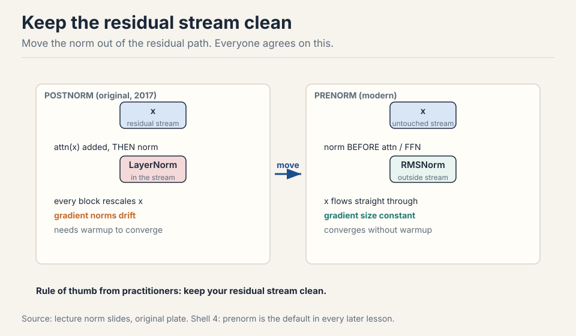
Why everyone agrees: the residual stream runs untouched from input to output, so gradients propagate straight through in the backward pass with constant size. Under postnorm, each block rescales the stream and gradient norms drift, which causes spikes and needs warmup to converge 11:00 ⏱11:00. The practitioner’s rule is simple: keep your residual stream clean. Some models (Grok, Gemma 2, OLMo 2) put the norm after the sublayer computation instead of before: still outside the stream, equally valid by the same logic 12:59 ⏱12:59.
Postnorm places LayerNorm inside the residual stream, so each block rescales the stream and gradient norms drift as they flow backward. This causes gradient spikes and requires warmup to converge at all. Prenorm keeps the stream untouched, so gradients propagate straight through with constant size. Training is more stable and converges without warmup. The one exception in the survey is OPT-350M, and OPT was widely regarded as unstable. Both satisfy the clean-stream principle, and both are used: Grok, Gemma 2, and OLMo 2 normalize after the sublayer computation. The choice between them is second-order. What is not second-order is keeping the norm out of the residual path itself.
The MLP: per-position computation
Attention mixes information across positions. The MLP (also called the feedforward layer) does the other job: per-position computation. Each token’s vector goes through two matrix multiplies with an activation between them, alone, no mixing with neighbors.
mlp(x) = down( activation( up(x) ) )
Up projects from d_model to a wider ff dim (classically 4x d_model). The activation applies elementwise. Down projects back to d_model. The widening gives the network room: a 4096-vector expands to 16384, gets transformed, and compresses back. Two-thirds of the model’s parameters typically live in these MLPs, which is why the ff dim ratio is one of the most-scrutinized numbers in the survey.
Where the original block breaks
The original 2017 block works. It trains. It generates. But six cracks showed up as models scaled, and each one got a worked demonstration from the survey of 19+ models 06:25 ⏱06:25.
Crack 1: postnorm gradients drift. The norm inside the stream rescales the residual path at every block. Gradient norms drift backward, spikes appear, and training needs warmup to converge at all.
Crack 2: LayerNorm costs runtime, not FLOPs. Normalization is 0.17 percent of FLOPs, yet up to 25 percent of runtime on small models 16:02 ⏱16:02. The workload is memory movement: read the vector, compute a mean, write it back. The chip waits on bits, not math. Bias terms in linear layers die by the same logic: memory traffic for almost no gain 18:02 ⏱18:02.
Crack 3: the MLP has no gate. A plain activation treats every hidden unit the same. The network cannot modulate units by learned, input-dependent amounts.
Crack 4: attention is permutation invariant. Shuffle the tokens and the scores do not change: nothing in the attention formula knows about order. The original added absolute position embeddings, but those bake position indices into the vectors. A model trained on 2048 positions has no embedding for position 3000, so longer inputs break.
Crack 5: softmax blows up mid-training. Both softmaxes, the output and the attention, exponentiate and divide. A slightly large logit becomes an astronomically large numerator. Million-dollar runs spike halfway through 65:01 ⏱65:01.
Crack 6: decode drowns in KV reads. During generation, each new token needs the keys and values of all previous tokens. Those get reread from memory every step. The arithmetic intensity collapses, and the KV cache, not the compute, sets the speed 77:02 ⏱77:02.
The key question
The original block works, and every one of its choices has a crack. What if each choice gets re-examined against what 19+ models actually did, keeping what stayed constant and changing what broke? That is the survey. Here is what it found.
The survey verdicts, one per crack
Prenorm: move the norm out of the stream. Covered above. The clean residual stream is now universal.
RMSNorm: drop the mean, drop the bias. RMSNorm divides by the root mean square and scales. No mean subtraction, no bias term.
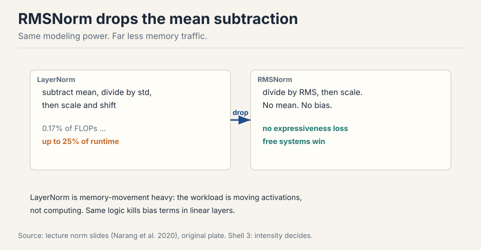
Work it on [2, 4, 6, 8]. The rms is sqrt((4+16+36+64)/4) = sqrt(30), about 5.48. Divide: [0.36, 0.73, 1.10, 1.46]. Compare LayerNorm’s [-1.34, -0.45, 0.45, 1.34]. Same ballpark, one less pass over the vector. Models train just as well: the mean subtraction bought expressiveness on paper, not in practice. It is a free systems win 13:56 ⏱13:56.
SwiGLU: gate the MLP. A gated linear unit adds a gate to the feedforward layer. Take xW, apply the activation, and multiply elementwise by a second projection xV. Then down-project.
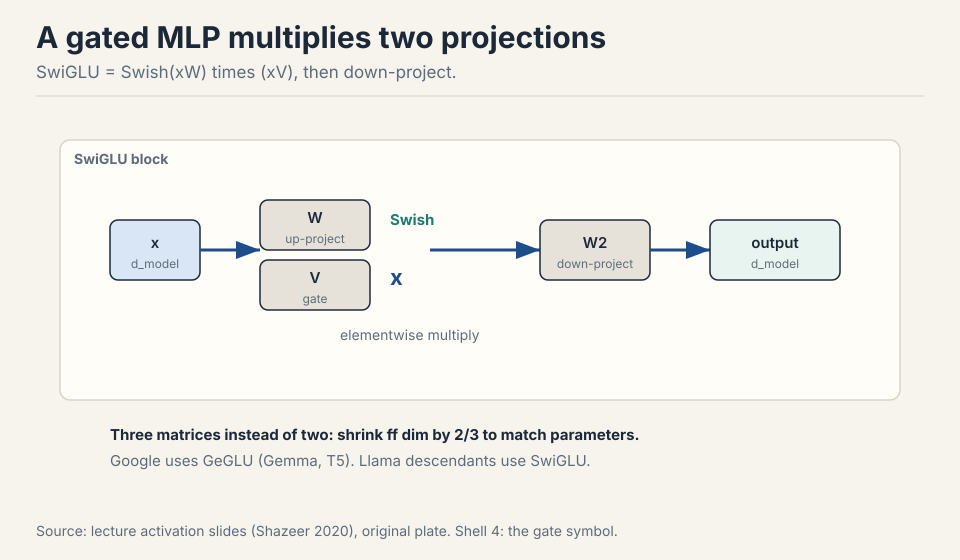
Name it by the activation: ReGLU, GeGLU, SwiGLU. Google uses GeGLU (Gemma, T5). Llama descendants use SwiGLU 23:47 ⏱23:47. The gate lets the network modulate each hidden unit by a learned, input-dependent scale: almost free expressiveness.
Three matrices instead of two means more parameters at the same width. The rule of thumb: shrink the feedforward dim by 2/3 to keep the parameter count matched 24:31 ⏱24:31. Shazeer’s ablations show GLU variants consistently beat non-gated ones at matched parameter counts. Gating is close to a free win.
Subchapter: the activation ladder (ReLU to GELU to SwiGLU)
The SwiGLU verdict is the last step of a ladder. Climb it one rung at a time. Each rung adds exactly one idea.
Rung 0: ReLU. relu(x) = max(0, x). On [-2, -1, 0, 1, 2] it gives [0, 0, 0, 1, 2]. Negatives are killed hard. The gradient is 0 or 1, nothing between. Simple, but dead neurons never recover.
Rung 0.1: GELU. gelu(x) = x times the Gaussian CDF of x. On the same five numbers: [-0.046, -0.159, 0, 0.841, 1.955]. Small negatives pass through, scaled down. The curve is smooth everywhere, so the gradient is never exactly zero. One new idea: replace the hard corner with a smooth bend. GPT-2, GPT-3, and BERT use GELU.
Rung 0.12: SwiGLU. SwiGLU(x) = (xW1) elementwise-times silu(xV), then down-project. The gate silu(xV) is learned and input-dependent: the network decides per unit, per token, how much passes. One new idea: replace the fixed curve with a learned gate. Shazeer’s ablations show GLU variants beat GELU at matched parameter counts. Llama, Mistral, and DeepSeek use SwiGLU. Google uses GeGLU (same gate, GELU as the curve) in Gemma and T5.
The ladder: fixed switch, smooth curve, learned gate. Each rung keeps the rung below and adds one mechanism.
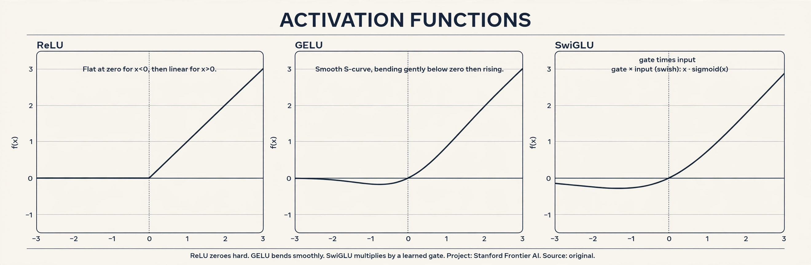
RoPE: position via rotation. The design goal: the score between two tokens should depend only on their relative distance, never on absolute position 33:01 ⏱33:01. Inner products are invariant to rotation. So rotate each token’s vector by an angle proportional to its position. Two tokens one apart always differ by one rotation step, wherever they sit.
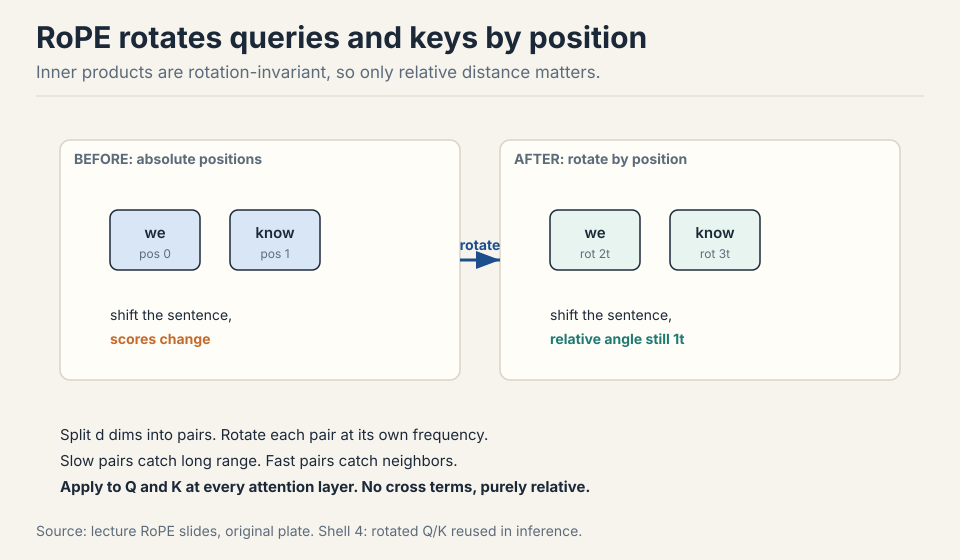
Work the toy in 2D. Token A at position 0: vector [1, 0], angle 0. Token B at position 1: rotate by 30 degrees, [cos 30, sin 30] = [0.87, 0.50]. The inner product is 1 x 0.87 + 0 x 0.50 = 0.87 = cos(30). Now shift both tokens one position right: A at 30, B at 60. The inner product is cos(60 - 30) = cos(30) = 0.87. Identical. Only the difference survived. That is the whole trick.
In d dimensions, split the vector into pairs and rotate each pair at its own frequency. Slow pairs capture long-range dependence. Fast pairs capture adjacency 36:23 ⏱36:23. Apply the rotations to queries and keys at every attention layer. Crucially, RoPE multiplies by sines and cosines instead of adding them, so no cross terms leak absolute position 37:57 ⏱37:57.
Absolute embeddings bake position indices into the token vectors, so the model must learn every position separately and cannot generalize past the trained length cleanly. RoPE encodes only relative distance through rotation, which generalizes to new positions by construction and adds no parameters. Since 2024 nearly every new model uses it or a variant. Adding creates cross terms between the position embedding and the word embedding, and from those cross terms the model can recover absolute position. Multiplying rotates the vector, which keeps the inner product purely a function of relative angle. That is the entire trick.
Subchapter: the position zoo (absolute, relative, RoPE, ALiBi)
The RoPE verdict above is one answer to the order question. The full family has four members. Each adds one idea on the previous one.
Absolute. Add a learned vector for position i to token i. One vector per position, learned during training. GPT-2 and BERT use this. The limit: a model trained on 2,048 positions has no vector for position 3,000. Longer inputs break.
Relative bias (T5). Stop adding position to the tokens. Instead, add a learned bias to each attention score based on the distance i - j. The scores carry distance directly. One new idea: position lives in the scores, not the vectors. The bias table is small (a few dozen buckets), but distant pairs share buckets, so resolution fades with distance.
RoPE. Rotate Q and K by an angle set by position, as the verdict above builds. One new idea: encode distance as rotation, which makes the score a pure function of relative angle. No position parameters at all. Llama, Mistral, Qwen, DeepSeek, and Gemma all use RoPE.
ALiBi. Skip learned positions and rotations both. Subtract m times (i - j) from each score: a fixed linear penalty, with a head-specific slope m. Tokens far apart pay more, always. One new idea: distance as a fixed penalty needs no parameters and never runs out. Position 100,000 pays the same rule as position 10, so ALiBi extrapolates past training length by construction. BLOOM and MPT use ALiBi. The price: the penalty is fixed, so the model cannot learn to attend far when it wants to.
The ladder: identity, score bias, rotation, fixed penalty. RoPE won the frontier because it keeps full expressiveness with zero parameters. ALiBi wins when extrapolation matters more than flexibility.
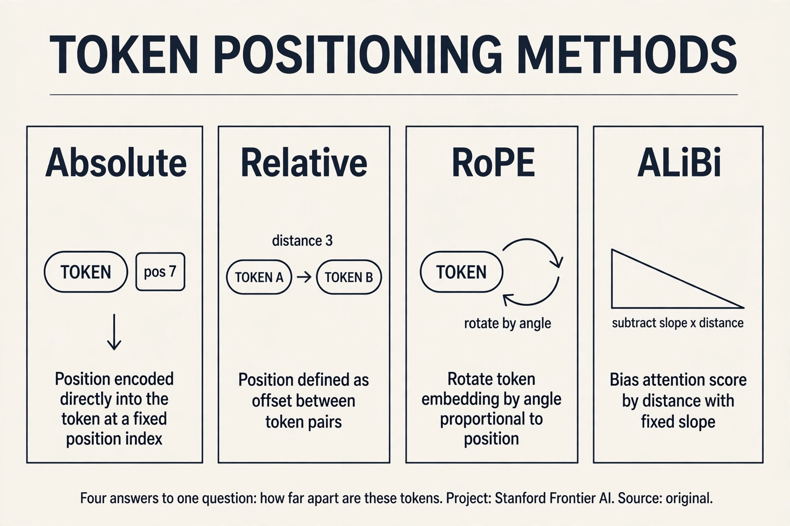
Serial blocks beat parallel blocks. The standard block is serial: attention, then MLP, each adding into the stream. GPT-J and PaLM tried parallel blocks: attention and MLP read the same input and add their outputs together, which allows sharing the norm and fusing matmuls 27:26 ⏱27:26.
serial: x -> attn -> (+) -> mlp -> (+) -> out
parallel: x -> attn -+-> (+) -> out (norm shared, matmuls fused)
x -> mlp --+
Parallel fell out of favor. Serial optimization got good enough that the systems gain was not worth the representation cost: parallel blocks effectively halve your depth 29:04 ⏱29:04.
Hyperparameters that forgive
Three ratios and one size decision cover nearly every model. All have wide basins: defaults win, and only FLOPs truly move the needle 43:40 ⏱43:40.
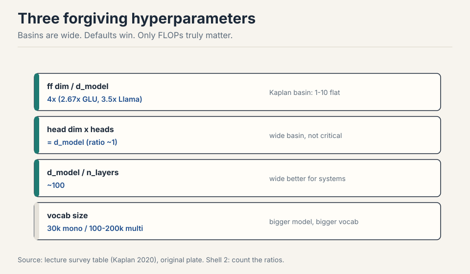
Feedforward ratio: 4x. ff dim = 4 x d model. GLU variants use about 2.67x after the 2/3 correction. Llama multiplied by 1.33x to about 3.5x because efficient attention freed budget for the MLP. T5 tried 64x for hardware efficiency, then quietly returned to 2.5x in v1.1 45:04 ⏱45:04. Kaplan’s sweep shows a flat basin from 1x to 10x.
Head dimensions multiply to d model. h heads of d/h each: the ratio sits near 1 across models, with another wide basin 49:53 ⏱49:53.
Aspect ratio ~100. d model divided by n layers lands near 100 for GPT-3, Llama, and most modern models. Wide models parallelize cleanly with tensor parallelism. Deep models force pipeline parallelism, which everyone avoids 51:31 ⏱51:31. EK et al. found that sweeping depth-vs-width mostly measures FLOPs: bigger compute wins regardless of shape.
Vocabulary size follows language coverage. Monolingual English models used ~30k. Multilingual production models use 100k-200k. Bigger models can carry bigger vocabs 55:11 ⏱55:11.
Side note on comparisons: bits per byte is always a valid metric across tokenizers, because modern tokenizers are complete (nothing dropped) and bytes are the fixed normalizer 57:12 ⏱57:12.
Do not search from scratch. Copy the consensus: ff dim 4x (2.67x for GLU), head dims multiplying to d model, aspect ratio ~100, vocab sized to language coverage. These sit in wide flat basins, so small deviations cost little. Spend your experimentation budget on one thesis at a time, usually an architecture change, not on re-tuning forgiving ratios. What actually moves loss is total FLOPs, not the shape. It worked but was compute-inefficient: the matrices were oversized for the gain. T5 v1.1 reverted to 2.5x, which tells you what the authors concluded. Bold deviations can train, but the basin around 4x is where efficiency lives.
Weight decay is an optimizer, not a regularizer
Language models train single-pass: more internet data than FLOPs, so the model never sees most data twice. Overfitting barely happens 59:51 ⏱59:51. Dropout has mostly died out. Yet weight decay remains popular. Why?
Because it is not regularizing. It interacts with the optimizer: stronger weight decay with learning-rate decay converges to a better minimum, even though train and validation loss track each other the whole way 62:14 ⏱62:14. Shrinkage toward zero lets you use higher learning rates or decay faster. The lesson: in deep learning, knobs interact in ways ML-101 intuition does not predict. Test, do not assume.
Stability, three interventions
Training can blow up halfway through a million-dollar run. The usual suspect is softmax: an exponential plus a division, in two places (the output and attention) 65:01 ⏱65:01.
z-loss tames the output softmax. The log normalizer log z can drift far from zero even when model outputs look fine. Add c x (log z)^2 to the loss: penalize the drift, keep z near 1 67:06 ⏱67:06.
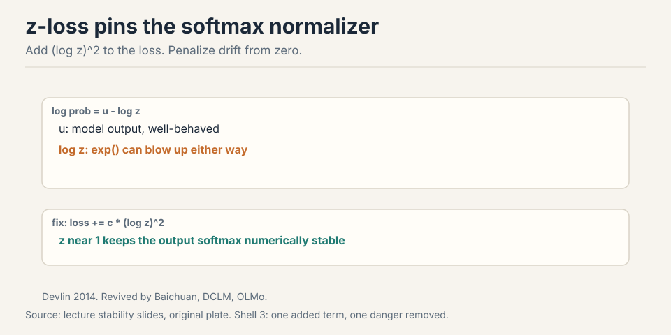
QK norm tames attention. LayerNorm the Qs and Ks before they multiply, so the softmax inputs sit at scale ~1 69:48 ⏱69:48. Borrowed from multimodal models (Idefics, Chameleon), now standard in large LMs, with no measured performance cost.
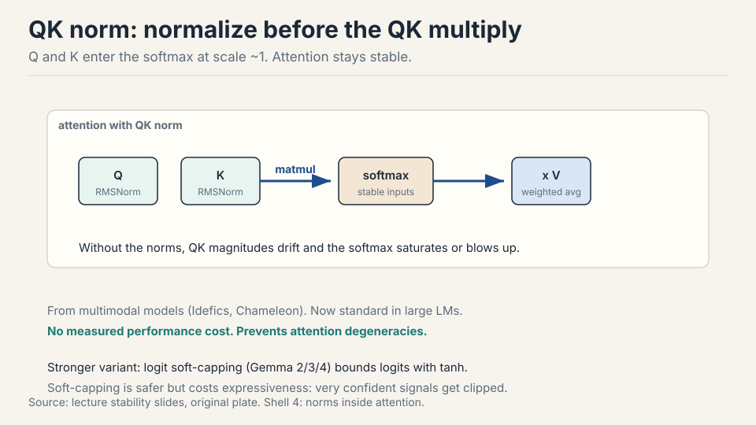
Logit soft-capping is the strong version: tanh-cap attention logits so they can never grow large (Gemma 2/3/4) 72:07 ⏱72:07. Very safe, but it clips confident signals and measurably costs quality. QK norm gives the stability without the tax.
First, check whether the spikes come from attention or the output: both have softmaxes with exp and division. Add z-loss to pin the output normalizer near zero. Add QK norm so attention softmax inputs stay at scale 1. Both are cheap and cost no quality. Reach for logit soft-capping only if those fail, knowing it caps expressiveness. And remember the standing rule: sprinkle LayerNorms at the instability until it stops. Matmuls are linear: large inputs give proportionally large outputs, and norms stay predictable. Softmax exponentiates, so a slightly large logit becomes an astronomically large numerator, and then it divides by a sum that can underflow toward zero. Both directions explode. That is why both softmaxes get dedicated interventions.
GQA, because decode is memory bound
Serving pays for FLOPs and for memory accesses. During prefill and training, intensity is healthy. During decode, each step generates one token: the KV cache must be re-read every step, and the arithmetic intensity collapses to n/d + 1/b 77:02 ⏱77:02. Small models with long contexts suffer most.
Multi-Query Attention shares one K head and one V head across all query heads. The KV cache shrinks by the head count, memory traffic drops, but expressiveness drops too 79:32 ⏱79:32. Grouped-Query Attention is the sweet spot: G groups of KV heads shared across all query heads. Near-MHA quality at near-MQA inference cost 81:07 ⏱81:07.
Work the numbers. d_model = 4096, 32 heads, head dim 128, bf16 (2 bytes). KV cache per token per layer: 2 (K and V) x heads x 128 x 2 bytes. MHA with 32 KV heads: 16 KB per token per layer. GQA with 8 KV heads: 4 KB. MQA with 1 KV head: 1 KB. At 80 layers and 32k context, MHA holds 41 GB of KV cache. GQA-8 holds 10 GB. The decode step rereads all of it, every token.
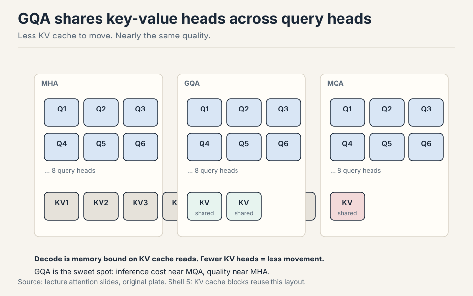
Subchapter: the attention family, from MHA to MLA
The GQA section above covers the middle of the family. The full progression attacks the KV cache from a new angle at each step. Work the numbers for d_model = 4,096, 32 heads, head dim 128, bf16.
MHA. 32 query heads, 32 KV heads. Cache per token per layer: 2 (K and V) x 32 x 128 x 2 bytes = 16 KB. Full expressiveness, full bill.
MQA. One KV head shared by all query heads. Cache: 2 x 1 x 128 x 2 = 512 bytes. One new idea: share the KV heads. The bill shrinks 32x. Expressiveness drops: every query head reads the same keys.
GQA. 8 KV heads, each shared by a group of 4 query heads. Cache: 2 x 8 x 128 x 2 = 4 KB. One new idea: groups, not extremes. Near-MHA quality at near-MQA cost. Llama 3 and Mistral 7B use GQA-8.
MLA (DeepSeek). Compress all KV into one 512-dim latent per token, then reconstruct per-head K and V on the fly. One new idea: compress by rank instead of by head count. The up-projections fold into the query matrix and the output matrix, so full K and V never materialize. The cache holds the latent, not 128 separate vectors.
Work MLA’s numbers for DeepSeek-V3’s own config (d = 7,168, 128 heads, head dim 128). MHA cache: 2 x 128 x 128 x 2 bytes = 65,536 bytes = 64 KB per token per layer. MLA cache: 512-dim latent plus a 64-dim decoupled RoPE key = 576 dims x 2 bytes = 1,152 bytes, about 1.1 KB. That is 57x smaller. The RoPE stream is decoupled because rotation does not survive the low-rank compression: rotary embeddings need the full per-head vectors, so they ride alongside the latent in their own small stream.
The ladder: full heads, one shared head, grouped heads, compressed latent. Each step keeps the attention math and shrinks what gets stored. Linear attention (L04) is the step that changes the math itself.
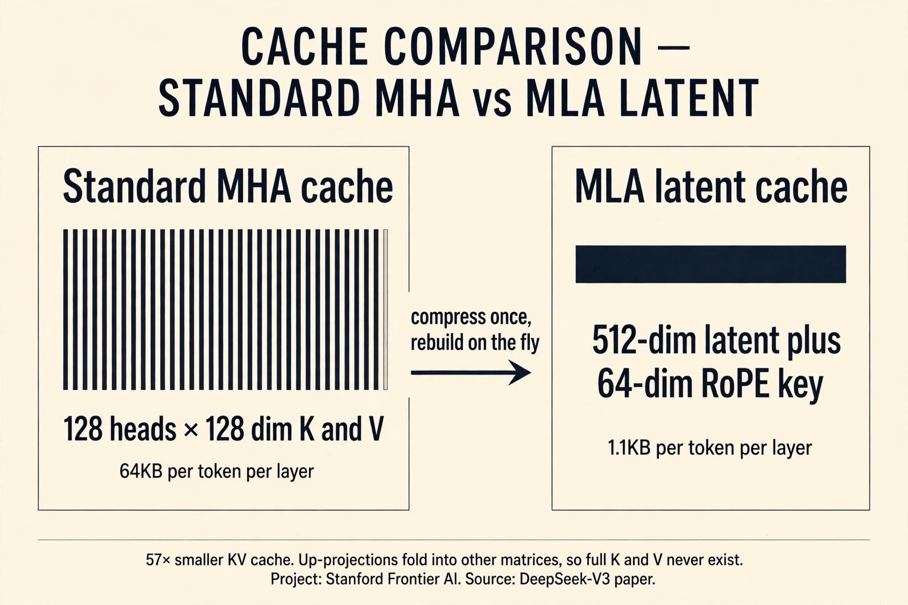
Sliding window attention
Full attention costs n^2. Sliding window restricts each position to a fixed local window. GPT-3 alternated full and banded layers. The idea returned because long context is the current frontier 85:08 ⏱85:08.
layers: F W W W F W W W F
| | | | | | | | |
window: * w w w * w w w * F = full, W = window
Every fourth layer attends globally. The rest attend locally. Local layers aggregate into the global ones as you go up, so the top of the network still sees everything 86:07 ⏱86:07. Llama 4, Gemma 4, and OLMo 3 use this pattern. Qwen3.5 swaps the window layers for a gated delta net (a state-space layer, next lecture) in the same alternating skeleton. Long-context architecture is still the most active design space in the field 87:13 ⏱87:13.
Subchapter: what is used where (the architecture census)
Every production model is a row in the survey table. The facts below are verified against public papers and model cards as of October 2026. Anything not public is marked unknown.
| Model | Attention | Position | Norm | MLP | Source |
|---|---|---|---|---|---|
| Llama 3 | GQA, 8 KV heads | RoPE, base 500k | RMSNorm, prenorm | SwiGLU | Llama 3 paper |
| Mistral 7B | sliding window 4K + GQA-8 | RoPE | RMSNorm, prenorm | SwiGLU | Mistral release docs |
| DeepSeek-V3 | MLA, 512-dim latent | decoupled RoPE | RMSNorm, prenorm | MoE SwiGLU | DeepSeek-V3 paper |
| Gemma 2 | local-global alternating + GQA | RoPE | RMSNorm, pre+post | GeGLU | Gemma 2 paper |
| GPT-4 | unknown | unknown | unknown | unknown | not public |
Read the convergence. Every open model uses RMSNorm, prenorm, RoPE, and a gated MLP. The differences are all in the attention column: that is where the KV cache bill lives, and that is where the labs still disagree. Gemma 2 is the outlier on norms (sandwich: pre and post) and on stability (logit soft-capping at 50.0 / 30.0). DeepSeek is the outlier on attention: MLA compresses by rank where everyone else shares heads.
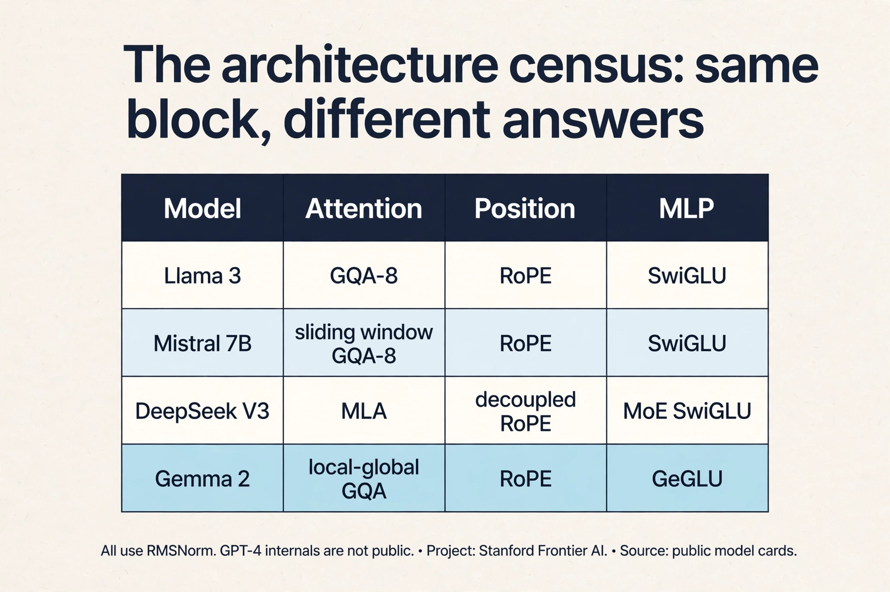
Mapping back: what each verdict fixes
Each survey verdict answers one crack, by name:
| Crack | Verdict | How |
|---|---|---|
| Postnorm gradients drift | Prenorm | Norm leaves the residual stream. The stream runs untouched, gradients flow straight through. |
| Norms cost runtime, not FLOPs | RMSNorm, no biases | Drop the mean and the bias. Same modeling power, less memory traffic. |
| Plain activations, no gate | SwiGLU / GeGLU | A learned gate modulates each unit. Consistent gains at matched parameters. |
| Permutation invariance | RoPE | Rotate by position. Scores depend only on relative distance. No parameters, generalizes past training length. |
| Softmax blowups | z-loss, QK norm | Pin the output normalizer near zero. Keep attention softmax inputs at scale 1. |
| Decode drowns in KV reads | GQA | Share KV heads across query groups. Cache shrinks 4x at 8 groups. |
| n^2 at long context | Sliding window | Local layers plus a global layer every fourth. The top still sees everything. |
The honest price
The survey method has a limit, and the lecture states it. There is no VC-dimension-style theory here. Nobody proved prenorm optimal or RoPE correct. The verdicts are empirical: they survived because models that used them trained well and models that did not hit the cracks. A closed lab may have found something different and stayed silent.
Every fix also has its own tax. Soft-capping is safe but clips confident signals and measurably costs quality. Sliding windows push global reasoning to every fourth layer. The hyperparameter basins are wide but flat: copying defaults is safe, not optimal. And the deepest caveat: architecture explains a fraction of final quality. Data and FLOPs move the loss more than any block choice. The block just has to not break.
Recap: the whole lesson on one screen
The story in eight steps. Each step answers the one before it.
- One block, repeated. Every modern LM is one block copied 80 to 96 times. Tokens enter as vectors. Each block must give every token a contextual representation.
- Attention mixes context. Queries meet keys, weights mix values. “frame” = 0.21 counselor + 0.21 helped + 0.58 self = [0.79, 0.79]. One step between any two tokens, fully parallel.
- Multi-head splits the work. 32 heads on 32 slices. Each head learns a different match pattern at zero extra arithmetic cost.
- The residual stream protects. x_out = x_in + sublayer(x_in). The input survives every block. Gradients flow straight through the addition.
- Norms keep vectors calm. LayerNorm: subtract mean, divide by std. Prenorm moves it out of the stream. RMSNorm drops the mean and bias for a free systems win: 0.17% of FLOPs, up to 25% of runtime.
- The MLP computes per position. Up, activate, down. SwiGLU adds a learned gate. Three matrices, so shrink ff dim by 2/3. Serial blocks beat parallel: parallel halves effective depth.
- RoPE encodes relative position. Rotate Q and K by position. Inner products depend only on distance: cos(30) stays cos(30) after a shift. Multiply, do not add.
- Stability and serving close the loop. z-loss pins the output softmax. QK norm steadies attention. GQA shrinks the KV cache 4x for memory-bound decode. Sliding windows alternate local and global layers for long context.
Go deeper
- Karpathy, Let’s build GPT (the embed above): https://www.youtube.com/watch?v=kCc8FmEb1nY
- Vaswani et al., Attention Is All You Need: https://arxiv.org/abs/1706.03762
- Su et al., RoFormer: Rotary Position Embedding: https://arxiv.org/abs/2104.09864
- Shazeer, GLU Variants Improve Transformer: https://arxiv.org/abs/2002.04745
Official sources and further reading
Official: - Lecture 3 video and slides: the 19-model survey table this chapter follows. - Vaswani et al. (2017): the original transformer. Postnorm inside the residual stream. - Shazeer (2020): GLU variants with parameter-matched ablations. - Su et al. (2021): RoFormer, the RoPE paper.
Further reading: - Kaplan et al. (2020): scaling laws with the hyperparameter sweeps (ff ratio basin, aspect ratio). - Ainslie et al. (2023): GQA, the inference-quality trade-off. - Narang et al. (2020): architecture ablations including RMSNorm speed.
Caveats from these sources. The survey reflects open models up to early 2026. Closed labs may differ silently. Parallel-vs-serial has no clean controlled ablation: the field’s verdict is implicit (later Google models dropped parallel). Soft-capping numbers come from Gemma reports. The quality tax is real but workload-dependent. Bits-per-byte comparisons assume complete tokenizers.
Connections to the other courses
- CS224N: the vanilla transformer and absolute/sinusoidal positions. This lecture is the diff to modern practice.
- CS336 later lectures: QK norm and z-loss return in the stability discussion. GQA’s KV cache is the core object of the inference lecture. The alternating local-global pattern returns with SSMs in L04.
- CS229S: tensor vs pipeline parallelism explains the aspect-ratio sweet spot.
- CS229: the loss chip is defined there. Here the block becomes the machine that minimizes it.
Sources
- VIDEOLecture 3 video, Stanford Online YouTube
- NOTESOfficial subtitle transcript (en-US)
- SLIDESLecture 3 slides (PDF)
- PAPERVaswani et al., Attention Is All You Need (2017)
- PAPERShazeer, GLU Variants Improve Transformer (2020)
- PAPERSu et al., RoFormer: Rotary Position Embedding (2021)
- SUPPLEMENTAinslie et al., GQA: Training Generalized Multi-Query Transformer Models (2023)